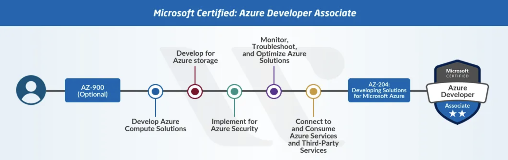

Azure Journey - Learning Experience.
Welcome
This repository is for training developers based on the content of the course AZ-204: Developing solutions for Microsoft Azure.
The objective of this course is to teach developers how to create end-to-end solutions in Microsoft Azure. Students will learn how to implement Azure compute solutions, create Azure Functions, implement and manage web apps, develop solutions utilizing Azure storage, implement authentication and authorization, and secure their solutions by using KeyVault and Managed Identities. Students will also learn how to connect to and consume Azure services and third-party services, and include event- and message-based models in their solutions. The course also covers monitoring, troubleshooting, and optimizing Azure solutions.
Requirements
- Azure Account (https://docs.google.com/document/d/1XEkiGWUC4_AzngZQLQnVt8yWCb3dft1HzXglUnJcJzM/edit)
- Azure Devops Account (https://docs.google.com/document/d/12tL1KMNMq3IPNkeSPOVNTpzk0irfMFLNu68BLeUn-sI/edit?usp=sharing)
Hands-on Labs
- Install Homebrew
brew install wget - Create a workspace for the course:
mkdir $HOME\training-az204 && cd $HOME\training-az204 - Download the content into the workspace directory
curl -o $HOME\training-az204\allfiles.zip https://github.com/MicrosoftLearning/AZ-204-DevelopingSolutionsforMicrosoftAzure/releases/download/v20210630.01/allfiles-v20210630.01.zip - Unzip
unzip $HOME\training-az204\allfiles.zip
- Install Homebrew
Install VS Code
brew install xcodegen xcode-select --installAbout the AZ-204 Course
This course should help you understand what to expect on the exam and includes a summary of the topics the exam might cover and links to additional resources.
Exam AZ-204: Microsoft Azure Developer Associate – Skills Measured

Develop Azure compute solutions (25-30%)
Implement IaaS solutions
- Provision virtual machines in Azure
- Create and deploy Azure Resource Manager templates
- Manage container images in Azure Container Registry
- Run container images in Azure Container Instances
Create Azure App Service Web Apps
- Create an Azure App Service Web App
- Enable diagnostics logging
- Configure web app settings
- Implement autoscaling rules (schedule, operational/system metrics)
Implemente Azure functions
- Implement input and output bindings for a function
- Implement function triggers by using data operations, timers, and webhooks
- Implement Azure Durable Functions
Develop for Azure storage (10-15%)
Develop solutions that use Cosmos DB storage
- Select the appropriate API for your solution
- Implement partitioning schemes
- Interact with data using the appropriate SDK
- Set the appropriate consistency level for operations
- Create Cosmos DB containers
Develop solutions that use blob storage
- Move items in Blob storage between storage accounts or containers
- Set and retrieve properties and metadata
- Interact with data using the appropriate SDK
- Implement data archiving and retention
Implement Azure security (15-20%)
Implement use authentication and authorization
- Implement OAuth2 authentication
- Create and implement shared access signatures
- Register apps and use Azure Active Directory to authenticate users
Implement secure cloud solutions
- Secure app configuration data by using the App Configuration and KeyVault API
- Manage keys, secrets, and certificates by using the KeyVault API
- Implement Managed Identities for Azure resources
Monitor, troubleshoot, and optimize Azure solutions (10-15%)
Integrate caching and content delivery within solutions
- Develop code to implement CDN’s in solutions
- Configure cache and expiration policies
- Store and retrieve data in Azure Redis cache
Instrument solutions to support monitoring and logging
- Configure instrumentation in an app or service by using Application Insights
- Analyze and troubleshoot solutions by using Azure Monitor
- Implement Application Insights Web Test and Alerts
- Implement code that handles transient faults
Connect to and consume Azure services and third-party services (25-30%)
Develop an App Service Logic App
- Create a Logic App
- Create a custom connector for Logic Apps
- Create a custom template for Logic Apps
Implement API Management
- Create an APIM instance
- Configure authentication for APIs
- Define policies for APIs
Develop event-based solutions
- Implement solutions that use Azure Event Grid
- Implement solutions that use Azure Notification Hubs
- Implement solutions that use Azure Event Hub
Develop message-based solutions
- Implement solutions that use Azure Service Bus
- Implement solutions that use Azure Queue Storage queues